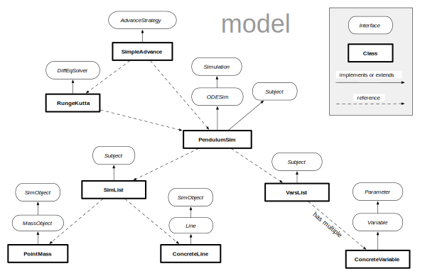
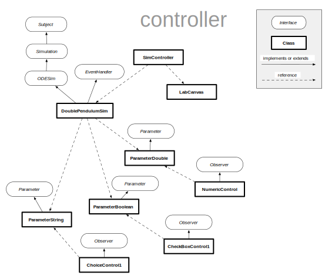

myPhysicsLab provides classes to build real-time interactive animated physics simulations. This page gives an introduction to the architecture of the myPhysicsLab software.
Contents of this page:
Additional information:
Key Points:
Application creates and initializes objects
Model, View, Controller pattern is used thereafter
Observer pattern is used extensively
The web page that shows the Simulation creates the application and then
tells the application to start. An application is a JavaScript object that creates and
connects all the other objects needed to run and display the Simulation. For example,
here is JavaScript code from DoublePendulumApp.html which creates and starts a
simulation:
app = new myphysicslab.sims.pendulum.DoublePendulumApp(elem_ids);
app.defineNames('app');
app.start();
The new command creates the DoublePendulumApp, which in turn creates the network
of objects that comprise the simulation. (The elem_ids object specifies the id’s of
elements on the web page where the simulation can place things like canvas and
controls).
The above diagram shows a typical set of objects created at startup; these include a simulation model (the blue objects); a set of objects to display a view of the simulation (the red objects); and means for interacting with the model, the controller (the green objects). This follows the well known Model, View, Controller Pattern.
The Observer pattern is widely used. See the section Subject, Observer, Parameter below.
After the application creates the network of objects, there are two ways myPhysicsLab code is executed:
Objects react to browser-generated events.
Example: a SimController reacts to mousedown events on an HTML canvas.
Example: a CheckBoxControl reacts to change events on an HTML checkbox control.
A callback function is repeatedly executed at around 40 times per second. The callback advances the simulation to synchronize with Clock time and then redraws the scene.
A Timer object periodically executes the
callback function. Timer is a fancier version of JavaScript’s setInterval() function.
A Clock keeps track of the current time. The Clock can run at different speeds; it can be paused; it can be set to a specific time; and it can keep track of any slippage from real time.
The callback function is typically
SimRunner.callback.
The callback tells an AdvanceStrategy
to advance the simulation to the current Clock time.
See Start-Up HTML File for more about when the callback is started.
Key Points:
Simulation is the model
AdvanceStrategy advances the Simulation state thru time
Simulation adds SimObjects onto its SimList to reflect the current state
Simulation state is stored in Variables in a VarsList
Parameters don’t change over time
Model classes can be used alone, without view or controller
The model consists of the blue colored objects in the Model-View-Controller Architecture diagram: ODESim, AdvanceStrategy, VarsList, SimList, SimObjects, Parameters, etc.
The above diagram shows relationships of the main interfaces and classes for a typical
ODESim simulation. These classes are found mostly in the myphysicslab.lab.model
namespace.
Most of the myPhysicsLab simulations implement the ODESim interface. These are simulations based on Ordinary Differential Equations (hence the name ODESim). An ODESim has a VarsList which contains the set of variables that represent the state of the system.
An AdvanceStrategy advances the
simulation state in time via the AdvanceStrategy.advance method; this is what
SimRunner.callback calls to drive the simulation forward in time. An AdvanceStrategy
uses a DiffEqSolver to advance the ODESim
by integrating the differential equations, thus changing the variables. There are 2
implementations of AdvanceStrategy:
SimpleAdvance advances the simulation by the requested time step. Used for simulations that do not have collisions.
CollisionAdvance handles collisions with binary search algorithm to go back in time as necessary.
The ODESim keeps a set of SimObjects in its SimList. Examples of SimObjects include: PointMass, Spring, RigidBody, and others. These SimObjects represent the current state of the simulation and might also be used in the process of calculating the state at the next moment in time. As a Subject, the SimList notifies any of its Observers when it adds or removes a SimObject from the SimList; see the Subject, Observer, Parameter section below.
The simulation state is kept in the VarsList. The SimObjects reflect the current state by their position, orientation, velocity, etc. Anything that varies over time should be stored in the VarsList. The SimObjects communicate the simulation state with the outside world (they are depicted in a LabView, as described below).
Because Simulation implements the Subject interface, it can provide various Parameters for controlling aspects of the simulation which do not change over time. For example, a ParameterNumber could represent the strength of gravity. See the Subject, Observer, Parameter section below.
A Simulation model can be used alone without any view or controller classes. For example, tests such as myphysicslab.test.Engine2DTests are usually run without any display or user interface.
See 2D Physics Engine Overview which extends
the myphysicslab.lab.model classes to simulate 2D rigid body objects with collisions,
contact forces, gravity, and more.
Key Points:
LabCanvas manages an HTML5 canvas and draws one or more LabViews
SimView is a LabView that draws DisplayObjects which mirror SimObjects
A DisplayObject is created for each SimObject
A LabView has a screenRect and a simRect
CoordMap provides mapping between simulation coordinates and screen coordinates
Standard HTML and CSS layout applies to everything on the web page.
The view displays the state of the simulation. We are careful to keep the model
separate from the view. The view consists of the red colored objects in the
Model-View-Controller Architecture diagram: LabCanvas, SimView,
DisplayObjects, and others. These objects are initially created by the application. The
application can customize these objects as desired to modify the look of the
simulation. Most of these classes are part of the myphysicslab.lab.view namespace.
A LabCanvas manages an HTML5 canvas element. A LabCanvas displays one or more LabViews which can draw into a LabCanvas.
A SimView is a LabView that draws a set of DisplayObjects (such as DisplaySpring, DisplayShape) which mirror the state of the SimObjects (such as PointMass, Spring, Polygon). The DisplayObjects are stored in a DisplayList which is accessed via SimView’s getDisplayList method.
The application decides how to represent each SimObject: what DisplayObject to use, what color or patterns to use when drawing an object, etc. Such display information is not part of the model.
For relatively simple simulations, the application will create all the DisplayObjects at start up. For more complex simulations where SimObjects are being created and destroyed as the simulation runs, we can create an Observer that watches for additions of SimObjects to the SimList. The Observer can automatically create an appropriate DisplayObject for the new SimObject. An example is RigidBodyObserver. See the Subject, Observer, Parameter section below for more about Observers.
Many DisplayObjects allow specifying a prototype DisplayObject. When a display
property (color, line thickness, etc.) is undefined, then the property is fetched
from the prototype. If the property is also undefined on the prototype then a default
value is used.
The Simulation will modify its SimObjects over time. For example, the location of a SimObject may change, and therefore the DisplayObject that mirrors that SimObject will change over time. A DisplayObject has a reference to the SimObject that it represents so it can query the current state.
A LabView has a screenRect and a simRect which are respectively the size that the
LabView should occupy in “screen space” (the JavaScript canvas coordinates) and the
rectangle of “simulation space” presented in that screen space.
A LabView has a CoordMap which provides a mapping between simulation coordinates and screen coordinates:
simulation coordinates: y coordinate increases upwards. Uses floating point numbers at any desired scale.
screen coordinates: y coordinate increases downwards. Uses integers where a unit equals a pixel on the screen.
Pan and zoom effects can be done by changing the LabView’s simRect. For
example, making the simRect smaller has the effect of zooming in. Changing the
simRect results in the CoordMap being recalculated accordingly.
A ModifySimRect is designed to easily do pan and zoom effects on a SimView. See makePanZoomControls which makes user interface controls that affect a ModifySimRect.
It is common to have two overlapping SimViews in a single LabCanvas: one SimView for the DisplayObjects that show the simulation state, and another SimView (called the “status view”) where objects such as DisplayClock or EnergyBarGraph are placed. This allows panning and zooming the simulation objects without affecting the energy or clock display.
The layout of the canvas and controls on the web page is handled using standard HTML and CSS techniques. The application is in control of the layout, but it typically will use classes such as TabLayout, CommonControls, Engine2DApp and AbstractApp; these aggregate common boiler plate code for creating controls and views.
The LabCanvas is periodically repainted by the callback function, which is typically SimRunner.callback.
Key Points:
GraphLine gathers data from a VarsList and stores it in a HistoryList
DisplayGraph draws the GraphLine
DisplayGraph is a DisplayObject that can be added to a SimView
AutoScale observes a GraphLine to determine enclosing rectangle, and modifies SimView accordingly
The classes in the myphysicslab.lab.graph namespace provide the ability to draw
graphs of simulation variables. The graph updates in real time as the simulation
proceeds. A graph is composed of several objects as shown in the diagram below.
An ODESim provides access to its Variables through its VarsList object. The graph classes only know about the VarsList object, they do not know about the ODESim object. Therefore a graph can also be made to draw from other data sources that have a VarsList object; see for example GraphCalcApp which draws graphs from equations that are entered in a text field.
A GraphLine stores the current variable values into a
HistoryList, which is later used to draw the
graph. Storing of the current variable value happens during the GraphLine’s
memorize method. For the memorize
method to be called automatically, the GraphLine can be registered with it’s LabView by
calling addMemo on the LabView, for
example:
labView.addMemo(graphLine);
That will cause the GraphLine’s memorize method to be called after each simulation
time step. See MemoList for more about that
process.
A GraphLine defines Parameters that specify which X and Y variables to draw. A GraphLine has other methods that control how the graph is drawn such as color, line thickness and whether to draw dots or lines. These choices can be set by JavaScript commands (in the startup application script or via the interactive Terminal), or user interface controls can be created so that the user can easily modify these.
The application creates the graph and the various controls to modify the graph. There are convenience classes such as StandardGraph1 and TimeGraph1 which create the various graph objects and connect them together. The application will typically use classes such as TabLayout and CommonControls which aggregate common boiler plate code for creating canvases, HTML divs, and controls.
A DisplayGraph implements DisplayObject and can be added to a SimView’s DisplayList like any other DisplayObject. Just like other DisplayObjects, the DisplayGraph draws into the SimView using simulation coordinates. Therefore the simulation rectangle of the SimView determines what part of the graph is visible.
To ensure that a graph is fully visible and occupies the entire SimView, we can make an AutoScale object. The AutoScale observes one or more GraphLines and keeps track of the rectangle that encloses all of the graph data. The AutoScale then adjusts the SimView’s simulation rectangle when the enclosing rectangle changes.
Key Points:
SimController sends mouse and key events to an EventHandler
EventHandler is often (but not always) implemented by the Simulation
User interface controls typically modify a Parameter
The controller classes are the green colored objects in the
Model-View-Controller Architecture diagram: SimController, EventHandler,
NumericControl, CheckBoxControl, ChoiceControl, etc. The user interface classes are in
the myphysicslab.lab.controls namespace, the others are found in the
myphysicslab.lab.app namespace.
These classes allow user interaction with the simulation. For example the user might click and drag within a LabCanvas to apply a force to an object in the simulation. The purpose of the controller classes being separate from the model and view is so that the user interaction techniques can be modified independent of the model and view.
The application creates the controller objects and connects them to the other objects. In the typical case a SimController is connected to a LabCanvas so that the SimController receives user mouse and keyboard events. The SimController does some pre-processing of events and then sends the events to the EventHandler to actually do something.
The pre-processing that the SimController does includes translating the events to simulation coordinates and finding the nearest dragable DisplayObject to the mouse click.
An EventHandler is often implemented by the Simulation. This violates the separation of model and controller, but in most cases the effort to separate them is not worthwhile. To separate model and controller requires giving the Simulation a rich enough API to be able to change the state of the Simulation, and then inventing a new controller class that implements the EventHandler interface.
In some cases it makes sense for the EventHandler to be a separate class from the Simulation; an example is RigidBodyEventHandler which is a separate class from RigidBodySim. Because RigidBodySim has a rich API it is easy to separate the model and controller. If desired, it would be possible to invent a different custom EventHandler (other than RigidBodyEventHandler) to use with RigidBodySim.
Another way to modify a Simulation is by changing its publicly available Parameters. For example, DoublePendulumSim has a ParameterNumber that represents the strength of gravity. A NumericControl or SliderControl can be connected with that gravity Parameter so that the user can change gravity by typing a number or changing the position of a slider. See the Subject, Observer, Parameter section below for more about how Parameters work.
Parameters are not required for making user interface controls. For example, you can make a NumericControlBase with just getter and setter functions. Similarly for CheckBoxControlBase, ChoiceControlBase, and ButtonControl – these do not need a Parameter but only a function or two.
Key Points:
This is an implementation of the Observer design pattern
A Parameter provides access to a value of a Subject, and meta-information such as the name of the Parameter.
There are three types of Parameter corresponding to boolean, numeric, and string types.
Subject broadcasts that a Parameter has changed to all registered Observers
Subject broadcasts that a momentary GenericEvent has occured to all registered Observers.
The interfaces Subject, Observer, Parameter, and SubjectEvent are widely used
throughout myPhysicsLab. They comprise an implementation of the
Observer design pattern. They are
defined in the myphysicslab.lab.util namespace.
The diagram shows the relationships of a AbstractSubject which has 4 Observers and 3 Parameters and a temporary GenericEvent.
The Observer Design Pattern allows objects to interact while knowing very little about each other. For example, a NumericControl is an Observer which can display and modify the value of a ParameterNumber belonging to any class, even though the NumericControl knows nothing about that class except that it implements the Subject interface. This promotes information hiding and reuse of software components.
A Subject provides access to a set of Parameters and notifies all of its Observers when a Parameter changes. There are three types of Parameter: ParameterNumber, ParameterBoolean, and ParameterString.
A Parameter combines these pieces of information:
name: for example, ‘gravity’
type: numeric, boolean, or string
subject: the Subject that owns the Parameter
getter: a function that returns the value of the Parameter
setter: a function that sets the value of the Parameter
Whenever the value of the Parameter changes, the Subject will
broadcast the change to all its
registered Observers. This happens regardless of how the change occurred: whether by
using the setValue method of the Parameter, or by directly calling the setter method
on the Subject.
A Subject also notifies its Observers when a GenericEvent occurs. These are momentary events that occur in the Subject. For example, Clock broadcasts a GenericEvent when it is paused; an Observer like a CheckBoxControl could then modify its appearance to match the current state of the Clock.
Note that Parameters and GenericEvent all implement the SubjectEvent interface.
Key Points:
Application’s constructor creates the objects it needs, possibly including some DOM objects.
Application is stored in a global variable, for access and to prevent being garbage collected.
Application is mostly inactive after construction is finished.
Helper functions and classes enable sharing common code between applications.
As mentioned above, an application is created when the web page loads. The application is the object that creates all the other objects discussed above.
The application doesn’t appear in the Model-View-Controller Architecture diagram because it makes all those objects and then is mostly inactive thereafter, except that it holds references to those objects so they don’t get garbage collected. (The application object is stored in a global variable so it doesn’t get garbage collected itself).
The application is made by a script in the Start-Up HTML File. The HTML file also defines HTML elements (div, textarea, etc.) for controls or canvas to be placed in. The script loads, instantiates and starts the application running. See the next section for more about the start-up process.
The application is instantiated with the new operator; this is when most of the
work happens for creating the various simulation, display, and control objects. The app
will also create new HTML elements that are added to the
DOM, for example user interface
controls or an HTML5 canvas element.
The process of constructing the set of objects in the application is fairly straightforward. You can read the application code to see what is happening, for example in DoublePendulumApp. There are many possible ways to set up a simulation and its display and user interface.
Applications often make use of helper classes to build the user interface and display. Using these classes allows sharing code that is identical between applications. Here are some of them:
AbstractSubject is an abstract base class that provides everything needed to implement the Subject interface.
AbstractApp is an abstract base class that creates the standard set of views, graphs and controls which are common to many applications that run an ODESim.
Engine2DApp is an abstract base class that creates the standard set of views, graphs and controls which are common to many applications that run a RigidBodySim, ImpulseSim, or ContactSim.
CommonControls provides various functions for constructing user interface elements; for example the “play, pause, rewind” controls are created with makePlaybackControls.
TabLayout implements specific ways to present the application on the web page; in this case with a tab-based layout to show the simulation view, graphs, and controls.
RigidBodyObserver automatically creates a DisplayObject for any SimObject added to the simulation; used with RigidBodySim or its subclasses.
Key Points:
When the web page loads, a script creates the application.
Usually the same file name is used for the start-up HTML file and the JavaScript file that contains the application code.
elem_ids object communicates location of HTML elements to application
Global variables are created to hold the application and classes
It is possible to have multiple applications running on a single web page.
When the web page loads, a script creates the application and starts a callback Timer running that drives the simulation. This section describes that start-up process.
In myPhysicsLab the convention is to use the same name for the JavaScript
application file and the start-up HTML file. For example, DoublePendulumApp.html and
DoublePendulumApp.js. After compilation, a suffix is added to these file names to
indicate what language they use. For example, the German versions would be
DoublePendulumApp-de.html and DoublePendulumApp-de.js. See documentation about
Internationalization (i18n).
Here is a typical start-up script from the HTML start-up file
DoublePendulumApp-en.html (the -en suffix means it is
an English version). This script creates a
DoublePendulumApp application
object which is stored in the app global variable.
<script src='DoublePendulumApp-en.js'></script>
<script>
(function build() {
var elem_ids = {
tab_list: 'tab_list',
container: 'container',
term_output: 'term_output',
term_input: 'term_input',
sim_applet: 'sim_applet',
div_graph: 'div_graph',
graph_controls: 'graph_controls',
sim_controls: 'sim_controls',
div_terminal: 'div_terminal',
images_dir: '../../images/'
};
app = makeDoublePendulumApp(elem_ids);
app.defineNames('app');
}());
</script>
<script>app.setup();</script>
<script>app.start();</script>
The first script tag loads the compiled version of the application and various
classes it needs from the file DoublePendulumApp-en.js. Loading the compiled JavaScript file defines the classes, but does not instantiate
the application. (Note that the loading process is considerably different when
[debugging – running uncompiled)](Building.html#debuggingrunninguncompiled)).
The second script tag is where the application is actually instantiated. The
elem_ids object specifies the id’s of various HTML elements that the application
will use (see below for more on this). The app might create new HTML elements that are
added to these HTML elements. The defineNames method is where
command short names are defined, which are important
for further customization and scripting.
The third script tag runs the application’s setup method, which can do various
operations such as parse a URL Query Script, or load a script from HTML5 local storage.
See Terminal for Script Execution.
The last script tag is what starts the callback running which drives the animation. See Event-Driven Programming.
The id’s seen in the elem_ids object are visible in the HTML file. For example, in
the following fragment you can see the id’s such as container, sim_applet,
sim_controls, etc.
<div id='container' style='position: relative; width: 100%;'>
<div id='div_terminal'>
<textarea id='term_output' cols=80 rows=20 wrap='soft'>
</textarea>
<label style='display:inline-block'>command:
<input type='text' id='term_input' size='80'>
</label>
</div>
<div id='sim_applet' >
</div>
<div id='sim_controls'>
</div>
<div id='div_graph' >
</div>
<div id='graph_controls'>
</div>
</div>
Additionally elem_ids contains a property images_dir which specifies the relative
URL of the directory containing images used by certain user interface controls.
Note that a global variable app is created in
the script. This global variable holds the application object and ensures that the
application and its objects are not garbage collected. It also makes it possible to
access the various objects from a script, as is discussed further in the section
Terminal for Script Execution
It is possible to have two independent versions of an application running on a
single page. This is demonstrated in
MultiSpringApp
which has two versions of SingleSpringApp running.
Note that there are two separate sets of HTML elements on that page, each with unique
names specified in the elem_ids. To be able to run two or more versions of an
application, it is important to not create any global variables other than the globals
for the applications.
The myPhysicsLab simulations do not have units of measurements specified such as meters, kilograms, seconds. The units of measurement are dimensionless, they can be interpreted however you want, but they must be consistent within the simulation.
Consider the single spring simulation as an example. The units involved are time, distance, mass, and the spring stiffness. The time, distance and mass are independent of each other and can be regarded as being whatever units you want. But spring stiffness combines time, distance and mass so its units are derived from the other units:
force = mass * acceleration = mass * distance / time^2
spring stiffness = force / distance = mass / time^2
If you decide to use seconds, meter, and kilogram for the units, then force and spring stiffness must be in units of
force = kilogram * meter / second^2 = newton
spring stiffness = newton / meter = kilogram / second^2
Similarly, when you are looking at the graph and see values for velocity those units are also derived and given the previous choices should be interpreted as
velocity = meter / second
Note in particular that a unit of time can mean anything from a millisecond to a millenium. However, the Clock class is used to advance the Simulation time along with real time as though each unit of time is equal to one second of real time. See Clock for more information.
{kind=link}